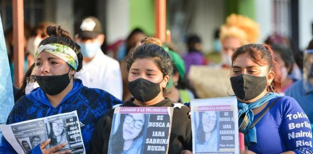

Este fenomeno empeora cada vez mal por los años. llegando incluso a ocurrir perdidas de vidas inocentes....
Según el relevamiento oficial, el 83,3% de los femicidios (5 de cada 6 casos) fueron cometidos por parejas actuales, mientras que el 16,7% restante tuvo como agresores a ex parejas. El informe confirma así un patrón reiterado de violencia de género que se desarrolla, mayoritariamente, dentro del hogar. Durante todo 2025 se registraron 6 femicidios caratulados provisoriamente en la provincia. En dos de esos casos, la acción penal quedó extinguida debido a la muerte de los presuntos agresores tras cometer el hecho. En cuanto al perfil de las víctimas, tres mujeres tenían entre 30 y 39 años, una era menor de 30 y dos superaban los 50 años. Al menos tres de ellas eran madres, con uno, dos y tres hijos respectivamente, lo que amplía el impacto social y familiar de estos crímenes. El informe también revela que la vivienda continúa siendo el espacio más peligroso para las mujeres: cuatro femicidios ocurrieron dentro del hogar, mientras que los dos restantes se produjeron en la vía pública. Respecto a los medios utilizados, el 50% de los casos se perpetró mediante fuerza física, el 33,3% con armas de fuego, y el 16,7% restante con otros métodos, como armas punzocortantes o combustibles. Las cifras vuelven a encender las alertas sobre la necesidad de políticas de prevención, detección temprana y acompañamiento efectivo especialmente en contextos de violencia de pareja. El riesgo para las mujeres sigue siendo más alto y persistente en Salta.
